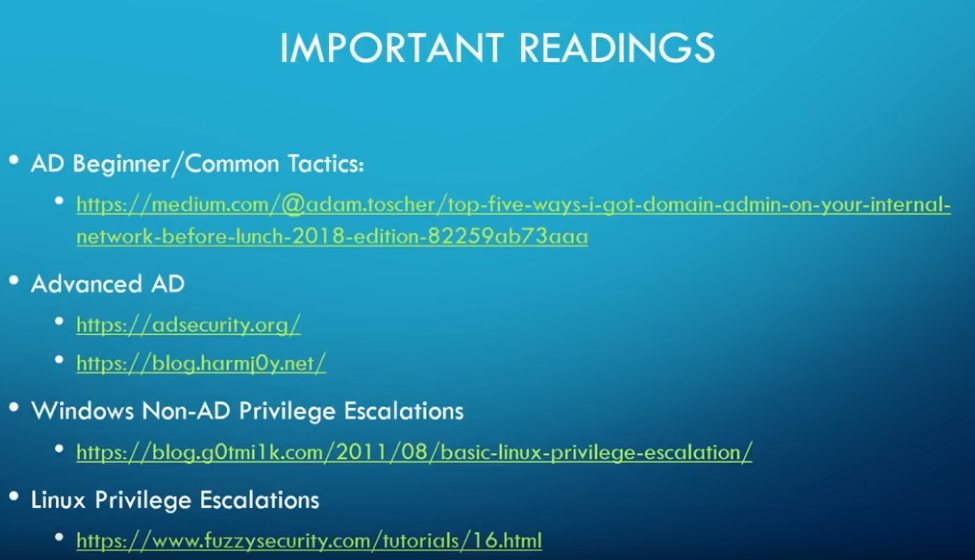

Read this article:
https://medium.com/@adam.toscher/top-five-ways-i-got-domain-admin-on-your-internal-network-before-lunch-2018-edition-82259ab73aaa.
=> It does a great job of discussing the most common internal methods we use in pentesting.
blog.g0tmi1k.com => best guide for linux
fuzzysecurity => best guide for windows- => These 2 guides are the closest to : hack the box, capture the flag, OSCP
